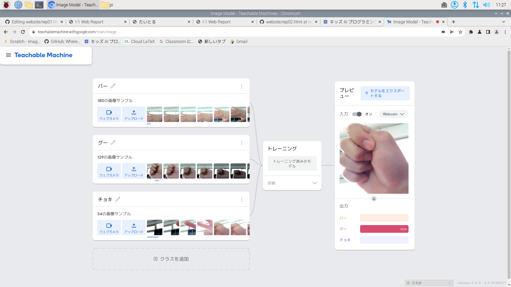

公大高専１年実習I-1レポート
3組20番 basketball77
第1週目
2-1 レポートをHTMLで作る
１週目のレポート
1.内容
1週目のレポートを作りレポートの作り方について学ぶ。また、ホームページを使って作成する仕方を学んだ。
2.感想
レポートをホームページで作ることができてとてもすごいなと思った。初めてすることだったのでとても難しかったが、少しずつなれることができるように頑張っていきたいなと思いました。
2-2 機械学習体験

1.内容
カメラで自分の腕を認識させ、グーとパーとチョキの区別ができるようにAIに覚えさせる事をした。またカメラで写真を撮り区別を指せる材料にするものを作った。
2.感想
AIで認識の区別などは、このようにしてすることを初めて知りました。AIについて知らな情報ばかりだったのでこれからしっかりとAIについて学んでいきたいなと思いました。